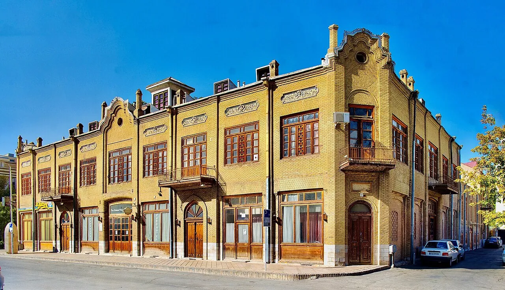

دليل السفر إلى مشهد · تكلفة السفر إلى مشهد، ميزانية زيارة مشهد، أسعار رحلة مشهد
كم تكلف رحلة مشهد المقدسة؟
الإجابة المختصرة
تقدّر مصادر السفر العامة تكلفة اليوم الواحد في مشهد لشخص واحد بنحو 80 إلى 110 دولارات تشمل الإقامة والطعام والتنقل المحلي، أي نحو 240–330 دولاراً لثلاثة أيام ونحو 560–770 دولاراً لأسبوع، ولا تشمل بالضرورة تذكرة الطيران. الفندق قرب الحرم يبدأ غالباً من نحو 30 دولاراً لليلة في الفئة الاقتصادية، ويصل إلى نحو 135 دولاراً في 5 نجوم.
هذا الدليل يجمع أرقاماً استرشادية بالدولار الأمريكي للطيران والإقامة والطعام والتنقل في مشهد، ثم يبيّن كيف تبني ميزانية رحلتك خطوة بخطوة. آخر مراجعة للأرقام: 4 نوفمبر 2026.

أرقام استرشادية بالدولار
هذه نطاقات منشورة في مواقع حجز وسفر عامة. استخدمها للتخطيط الأولي فقط، ثم أكّد السعر الحالي قبل الحجز.
| البند | النطاق التقريبي (دولار أمريكي) |
|---|---|
| تذكرة طيران من النجف إلى مشهد (اتجاه واحد) | من نحو 180 دولاراً في أرخص الأسعار المرصودة (قد ترتفع كثيراً في المواسم أو مع التوقف عبر دبي، حيث رُصدت أسعار 470–520 دولاراً) |
| فندق اقتصادي أو 3 نجوم قرب الحرم (لليلة) | 30 – 75 دولاراً |
| فندق 4 نجوم (لليلة) | 50 – 125 دولاراً |
| فندق 5 نجوم (لليلة) | 55 – 135 دولاراً |
| وجبة محلية في مطعم بسيط | 2 – 5 دولارات |
| وجبة في مطعم عادي | 5 – 10 دولارات |
| وجبة من ثلاثة أطباق في مطعم راقٍ | 15 – 20 دولاراً |
| الطعام والتنقل والمعالم لشخص واحد (يومياً) | 21 – 56 دولاراً |
| رحلة واحدة بالمترو أو الحافلة | 0.2 – 0.4 دولار |
| سيارة أجرة من المطار إلى وسط المدينة | نحو 11 – 23 دولاراً |
مثال ميزانية: مسافر واحد لمدة 3 ليالٍ
حساب توضيحي مبني على الأرقام أعلاه، باستثناء تذكرة الطيران:
- الإقامة: 3 ليالٍ × (30–75) = 90 – 225 دولاراً.
- الطعام والتنقل والمعالم: 3 أيام × (21–56) = 63 – 168 دولاراً.
- سيارة أجرة من المطار وإليه: نحو 22 – 46 دولاراً.
المجموع التقريبي: 175 – 439 دولاراً دون الطيران.
مثال ميزانية: زوجان لمدة 5 ليالٍ في فندق 4 نجوم
- الإقامة: غرفة واحدة، 5 ليالٍ × (50–125) = 250 – 625 دولاراً.
- الطعام والتنقل والمعالم: شخصان × 5 أيام × (21–56) = 210 – 560 دولاراً.
- سيارة أجرة من المطار وإليه: نحو 22 – 46 دولاراً.
المجموع التقريبي: 482 – 1,231 دولاراً دون الطيران.
ما الذي يرفع التكلفة أو يخفضها؟
الفارق بين الحد الأدنى والأعلى كبير لأن الإقامة هي البند الأثقل: القرب من الحرم، ومستوى الفندق، وعدد الليالي، والموسم، وعدد الغرف المطلوبة للعائلة. تذكرة الطيران هي البند الثاني، وتختلف كثيراً بين الرحلة المباشرة والرحلة مع توقف، وبين الحجز المبكر والمتأخر.
قارن دائماً السعر النهائي لكل ليلة مع ما يشمله (الفطور، النقل إلى الحرم، رسوم الخدمة)، فالأرخص ظاهرياً قد يكلف أكثر بعد إضافة التنقل.
كيف تبني ميزانيتك؟
اكتب في جدول: تذاكر السفر + الإقامة لكل الليالي + الوصول والتنقل + الطعام اليومي × عدد الأيام + المصروفات الإضافية + مبلغ احتياطي. سجّل لكل بند السعر وتاريخ الحصول عليه، وقارن سيناريوهين أو ثلاثة (اقتصادي ومتوسط) بدلاً من افتراض أن أرخص خيار سيبقى متاحاً عند الحجز.
وتحقق من متطلبات الدخول والتأشيرة عبر الجهات الرسمية المعنية بجنسيتك قبل شراء أي تذكرة غير قابلة للاسترداد.
عن الأسعار في هذا الدليل
الأرقام المذكورة بالدولار الأمريكي، وهي نطاقات استرشادية جمعناها من مواقع حجز وسفر منشورة علناً. ولأن الأسعار تتغير بشدة بحسب الموسم وسعر الصرف وتوفر الغرف والمقاعد، نؤكد لك السعر الحالي عند التواصل بحسب تاريخ سفرك وعدد المسافرين، ونوضح ما يشمله وما لا يشمله قبل أي التزام.
ننصحك بالمقارنة: اطلب عروضاً من أي مقدّم خدمة آخر في مشهد، ثم قارنها بعرضنا من حيث السعر النهائي ووضوح التفاصيل وجودة الخدمة. نثق أنك ستجد عندنا خدمة أكثر إنصافاً وجودة، ونرحب بأن تحكم بنفسك. واطلب دائماً تأكيد السعر والتفاصيل كتابةً قبل الدفع.
أسئلة شائعة
كم تبلغ تكلفة رحلة مشهد؟
بحسب تقديرات مواقع السفر العامة، تبلغ تكلفة اليوم لشخص واحد نحو 80–110 دولارات (إقامة وطعام وتنقل محلي)، أي نحو 560–770 دولاراً لأسبوع، دون تذكرة الطيران. يتغير الرقم بحسب الموسم ومستوى الفندق وعدد المسافرين.
كم سعر الفندق قرب حرم الإمام الرضا؟
تتراوح الليلة غالباً بين نحو 30 و75 دولاراً في الفئة الاقتصادية و3 نجوم، وبين 50 و125 دولاراً في 4 نجوم، وبين 55 و135 دولاراً في 5 نجوم، بحسب المصادر المنشورة.
كم تكلف تذكرة الطيران من النجف إلى مشهد؟
رُصدت أسعار تبدأ من نحو 180 دولاراً للاتجاه الواحد في أرخص الحالات، وترتفع كثيراً في المواسم أو مع التوقف عبر دبي، فقد ظهرت أسعار بين 470 و520 دولاراً.
كم أحتاج للطعام والتنقل يومياً؟
تقدّر المصادر نحو 21–56 دولاراً يومياً لشخص واحد للطعام والتنقل والمعالم، مع وجبات محلية بسيطة بين 2 و5 دولارات ومطاعم عادية بين 5 و10 دولارات.
هل هذه الأرقام نهائية؟
لا، هي نطاقات استرشادية جُمعت من مواقع منشورة وتتغير بشدة. أرسل تاريخ سفرك وعدد المسافرين لنؤكد لك السعر الحالي، ويمكنك مقارنته مع أي مقدّم خدمة آخر في مشهد.
مصادر الأرقام
جُمعت الأرقام من مواقع حجز وسفر منشورة علناً بين 2025 و2026، وراجعناها بتاريخ 4 نوفمبر 2026. هي نطاقات استرشادية بالدولار الأمريكي وليست عروضاً ملزمة.
الخطوة التالية
إذا حددت مدينة الانطلاق وتاريخ السفر وعدد الأشخاص ومدة الإقامة، يمكن مناقشة البنود التي تحتاج إلى تنسيق، مع تأكيد كل سعر من مصدره قبل الالتزام.